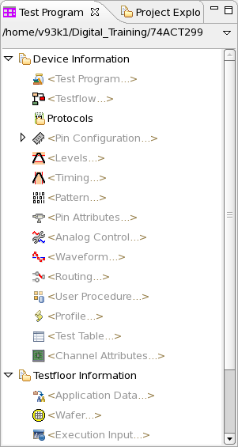

Test Program Explorer
The Test Program Explorer is included in the Setup perspective and provides a hierarchical view of the test setup data.
From here, you call up all the device setup tools like the Pin Configuration Tool, the Pattern Tool etc.
When you load the setup data using the Test Program Explorer, the data will be loaded from the file system of the system controller to the test system.

If a file name is displayed instead of the component (for example, <Levels...>), the related data file is loaded. In the figure above for example the vector file is loaded (file name vectors_func_first) and the pin attributes file is not loaded.
If the symbol * is displayed besides the file name, the data was changed and not yet saved.
If the text [external] is displayed besides the file name, a component is loaded that does not belong to the active device.
Double-click any setup component to open the relating setup tool. An example: When you double-click the Pin Configuration, then the Pin Configuration Tool is opened.
The Test Program Explorer also displays some result files like shmoo data.
The toolbar of the Test Program Explorer View contains the following icons:
Icon |
Function |
|---|---|
Collapses all test setup components. |
|

|
Only save the test setup components which are the modified and not yet saved, or save all the loaded test setup components. You can set the behavior of this icon in Test Program Explorer preference page. |
Expands all test setup components. |
|

|
Provides menu items for expanding and collapsing all test setup components. |
Functional changes
- Introduced before SmarTest 6.3.2
- SmarTest 6.5.4: Channel attributes added to Device Information.
- SmarTest 7.0.3: Test control removed from Test Program Explorer.
- SmarTest 7.0.3: Bitmap result data is no longer displayed in the Test Program Explorer.
- SmarTest 7.1.0: Protocols and Protocol Assignments added.